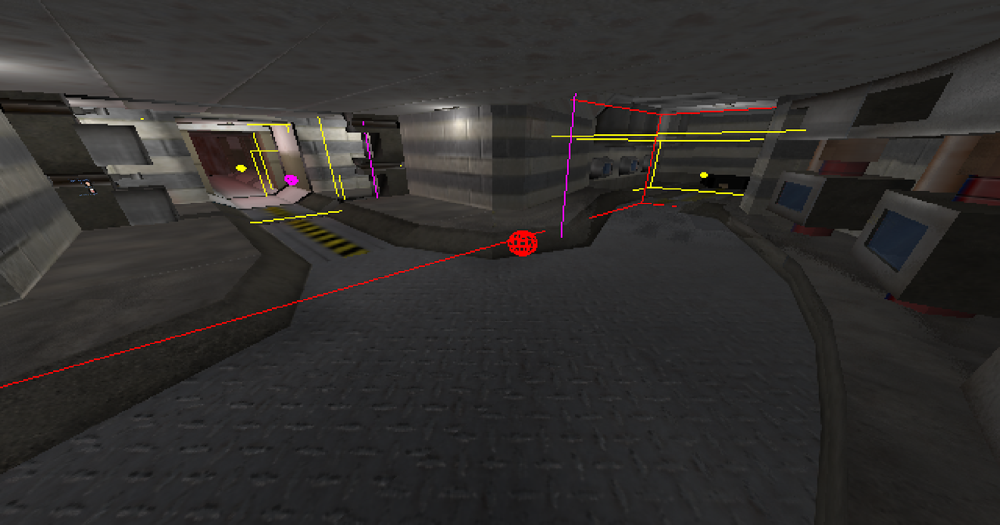
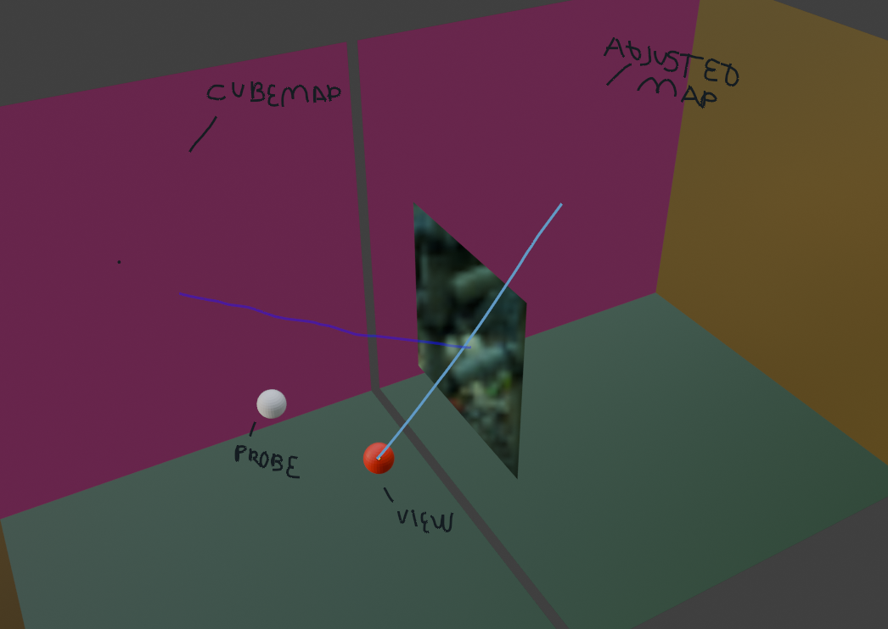
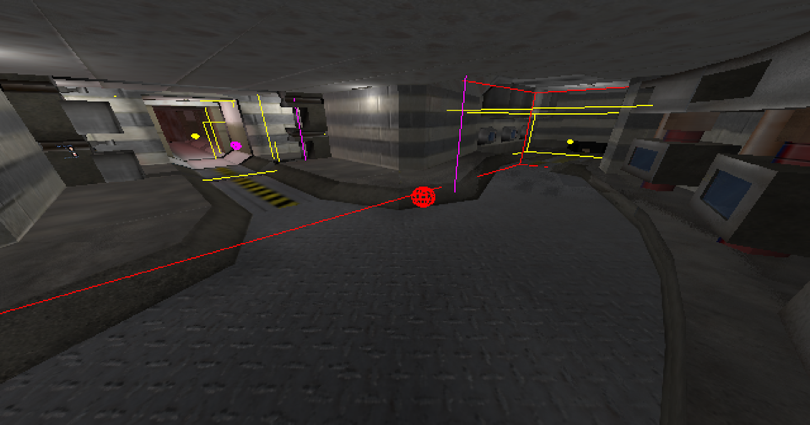
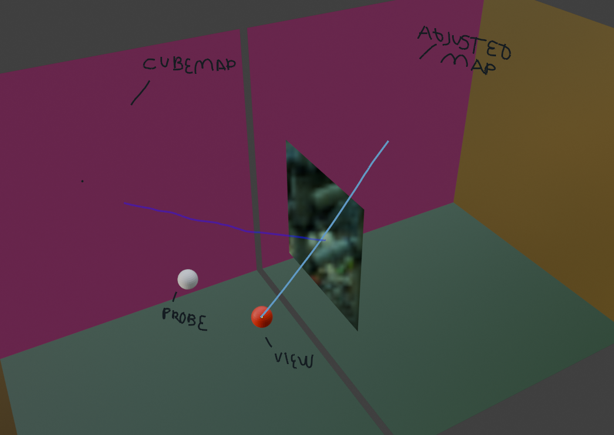

Overview
For BUAS block B we needed to recreate a metal gear solid style game in OpenGL on the
raspberry pi (4) and PC
I chose to go deeper in some techniques like parallax adjusted cubemap reflections and
particles.

 


